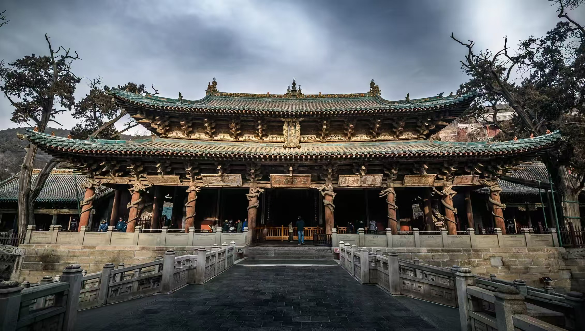

Jinci
Jinci is often considered the cultural highlight of Taiyuan. Famous for its elegant temple complex, ancient trees, spring water, and Song-era architectural elements, it presents history in an unusually complete form. The site is not only important for its age, but also for the harmony between buildings, landscape, and ritual atmosphere.
For visitors, Jinci provides both visual beauty and historical depth. Carved details, shaded pathways, and reflective pools make it a place that encourages slower observation rather than quick sightseeing. It is ideal for presenting Taiyuan as a city of refinement and endurance.